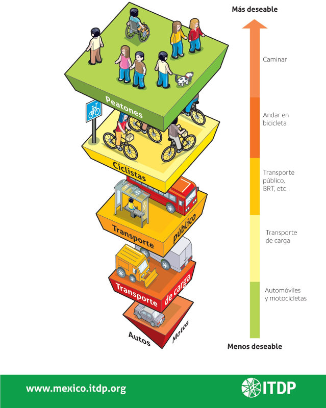

Con la inclusión del automóvil en el espacio urbano en la primera mitad del siglo XX, la idea de calle cambió por completo. El coche pasó a ser el personaje protagonista en el escenario vial, dejando de lado a los demás “actores” de la movilidad. Acto que causó problemas como alta incidencia de accidentes, inaccesibilidad, contaminación, y el deterioro del espacio público más importante: la calle.
Sin embargo, las políticas de planeación urbana actuales, proponen una solución bastante simple y nada nueva: la calle completa, es decir, una calle que incluya a todos los usuarios del espacio público, como son peatones, ciclistas, usuarios del transporte público y automovilistas; ya sean niños, adultos mayores, discapacitados etc. Siguiendo siempre el orden prioritario de la Pirámide de la Movilidad.

Durante décadas, los planeadores urbanos han dado a las vialidades una única función: mover personas de un punto de la ciudad a otro, de la forma más fácil y rápida posible. Esta premisa de diseño ha puesto al automóvil como “rey de la calle”, desplazando a los demás usuarios del espacio urbano, y privándolos de infraestructura adecuada para su uso y transporte.
Las vialidades diseñadas en torno al coche (incompletas), resultan en calles inseguras tanto para automovilistas como para peatones y ciclistas. Saturan el paisaje urbano al generar contaminación tanto visual, atmosférica y acústica.
Se estima que en la Zona Metropolitana de la Laguna, el 49% de los viajes en un día se hacen en automóvil particular, 30% en transporte público, 19% a pie y solo 2% en bicicleta (logit, 2011); contrario a lo recomendado por las políticas de movilidad sustentable.
Por otra parte, la calle completa propone una vialidad democrática e inclusiva, donde cada “actor” de la movilidad es tomado en cuenta. Tiene como objetivo lograr la convivencia entre todas las modalidades de transporte, incluyendo automovilistas.
Este esquema de vialidad integral busca generar cotidianeidad e interacción social. Hacer que el cruzar la calle, tomar el transporte público, viajar en bicicleta, dar un paseo o incluso conducir, sean actividades sencillas y no proezas que pongan la integridad física de por medio.
La Coalición Nacional de Calles Completas (National Complete Street Coalition, EUA) afirma que el desarrollo de políticas de este tipo de vialidades, tiene grandes beneficios medibles como:
- Decrecimiento de accidentes por atropellamiento; Al reducir las dimensiones de los carriles de autos, éstos tienden a bajar la velocidad, elevando las posibilidades de supervivencia de un peatón en caso de accidente. Se estima que un peatón atropellado tiene un 90% de probabilidades de sobrevivir si la velocidad de impacto es 30km/h o menor, si esta velocidad se excede, las probabilidades bajan a 50%.
- Beneficios económicos: Los esquemas de calle completa elevan la calidad urbana al ofrecer mayores opciones de transporte, incrementar la seguridad y la imagen urbana, todo esto con un efecto positivo en la plusvalía de la zona.
- Impactos directos a la salud de los ciudadanos al promover la movilidad peatonal y ciclista. Se calcula que el riesgo de obesidad se incrementa un 6% por cada hora al día que se pasa en un automóvil. En contraste, cada kilómetro caminado al día, es asociado con un decrecimiento del 4.8% de probabilidad de obesidad.
Los elementos de diseño urbano que incluyen las calles completas deben satisfacer las necesidades de cada modalidad de transporte, afectando lo menos posible a los otros usuarios. Estos elementos incluyen (en orden prioritario):
- Infraestructura peatonal: Banquetas suficientemente anchas, pasos peatonales (de cebra) con correcta semaforización, rampas para discapacitados etc. Se deben evitar en lo posible los puentes peatonales.
- Infraestructura ciclista: Ciclovías o ciclocarriles (confinados o compartidos) y espacios para el estacionamiento de bicicletas.
- Transporte público: Estaciones delimitadas, “bahías”, carriles exclusivos y posibles inclusiones de BRT (Bus Rapid Transit).
- Infraestructura para automóviles: Carriles correctamente definidos y con menores dimensiones, entre otras medidas para reducir su velocidad, señalética clara y semaforización sincronizada.
Suena sumamente retador la inclusión de estos elementos en los esquemas de vialidad con los que contamos actualmente. Sin embargo, deben tomarse decisiones radicales que favorezcan a todos los “actores” de la movilidad y no solo al grupo mayoritario. Todos somos en algún momento, peatones, ciclistas o usuarios del transporte público (grupos vulnerables de la movilidad) y es hasta ese momento, en que nos damos cuenta de lo poco equitativas que son nuestras vialidades.
La sección de la calle contemporánea debe ser más compleja de lo que es hoy.
Los desarrolladores urbanos y autoridades deben apostar por nuevos esquemas de vialidad como lo es la Calle Completa y el DOT, para así lograr la reivindicación de la calle como espacio público equitativo y de calidad.